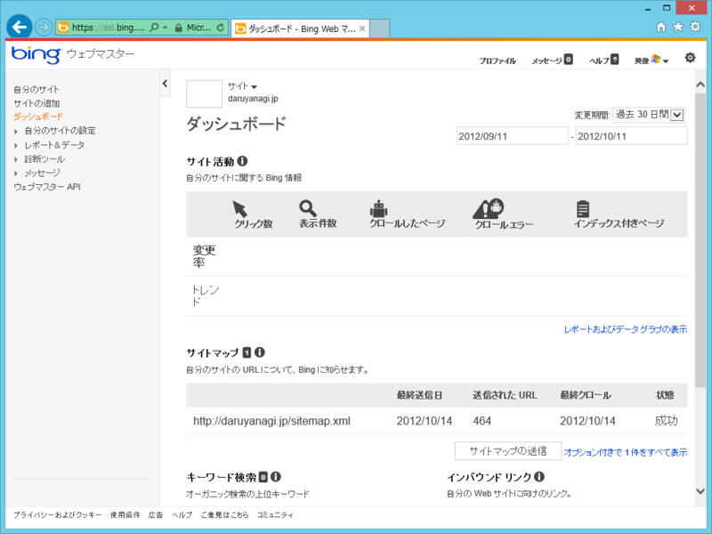
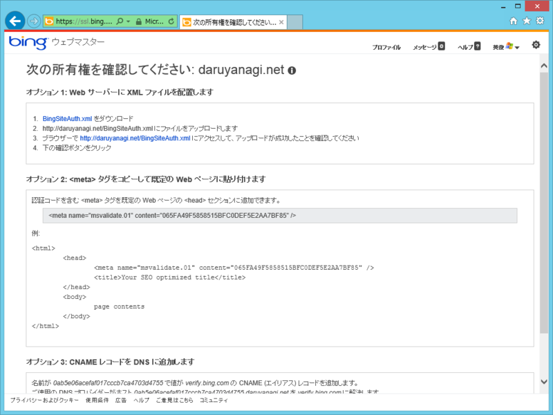
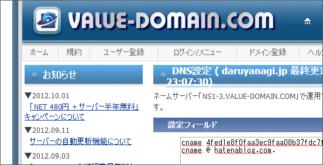

はてなブログで Bing ウェブマスターツールを利用する
公開日：

どうもウチのブログは Google に嫌われているみたいで、検索にまったく引っかからない。でも、Bing さんは引っかけてくれる。やっぱ時代は Bing だな*1。
その Bing さんにも、Google と同じくウェブマスターツールというのがあって、ちゃんと登録しておくと検索順位が上がるかもしれない*2。
まぁ、そうでなくてもいろいろ面白いデータがみられるかもしれないので、こちらにも一応登録しておくことにした。
はてなブログでの設定方法

Bing ウェブマスターツールに Web サイトを登録するには、以下のいずれかの方法によってその Web サイトを所有していることを証明しなければならない。
- Web サーバーに XML ファイルを配置
- タグをコピーして既定の Web ページに貼り付け
- CNAME レコードを DNS に追加
しかし、残念ながら はてなブログ (beta) の場合、1 も 2 も不可能。Pro アカウントを購入して独自ドメインを割り当てている場合のみ、辛うじて 3 の方法が利用できる。*3
CNAME レコードを DNS に追加（VALUE DOMAIN）

「名前が 0ab***55（ながーい値） で値が verify.bing.com の CNAME (エイリアス) レコードを追加します。」という指示が出るので、それに従おう。VALUE DOMAIN:バリュードメイン を利用している場合は、ドメインの設定画面で
cname 0ab***55 verify.bing.com.
cname @ hatenablog.com. // <- はてなブログの DNS 設定
と記述すればよい*4。反映されるまでちょっと待ってから（30分ぐらいかな？）、［確認］ボタンを押せば設定は完了だよ。